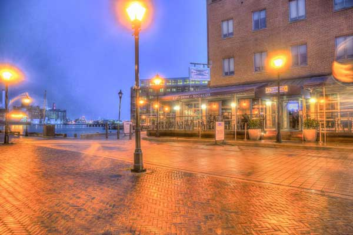

Food & Dining
Barcocina's
 1629 Thames Street,
Baltimore,
MD
21231
(410) 563-1500
1629 Thames Street,
Baltimore,
MD
21231
(410) 563-1500
From the group behind Bond Street Social and executive chef Marc Dixon, Barcocina, Baltimore's newest restaurant and social scene in Fell's Point waterfront.
The restaurant features Mexican inspired cuisine with fresh ingredients and original twists meant to share amongst friends. Barcocina's cocktail list emphasize fresh squeezed juices for next level freshness and taste. With amazing outdoor space and uninhibited views of the harbor, Barcocina is a premier place to eat, drink and socialize. The beautiful and fully renovated space features glass and aluminum garage door walls that open to the harbor, so every seat indoor and outdoor will make the beautiful harbor view a part of the Barcocina experience.